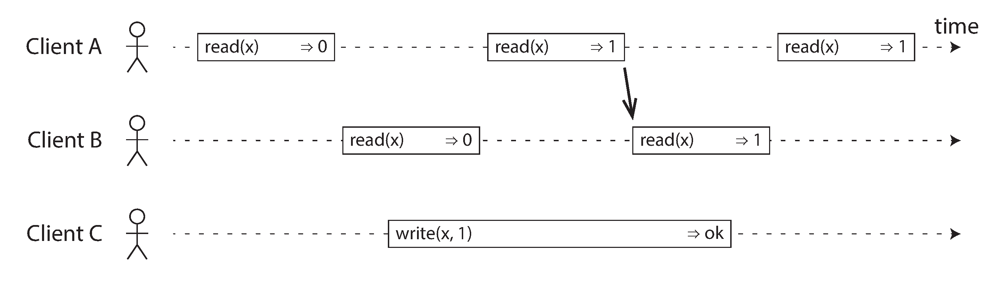
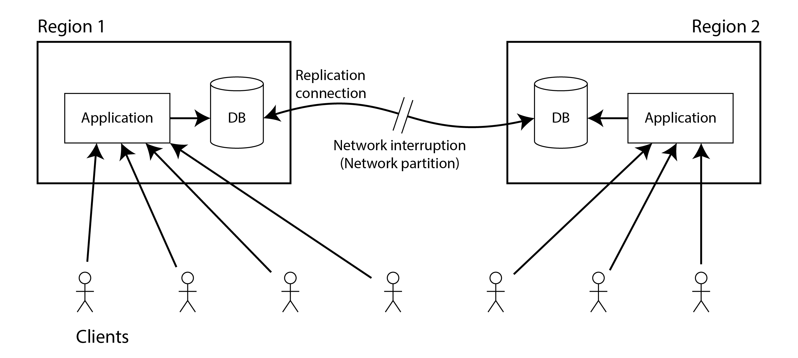
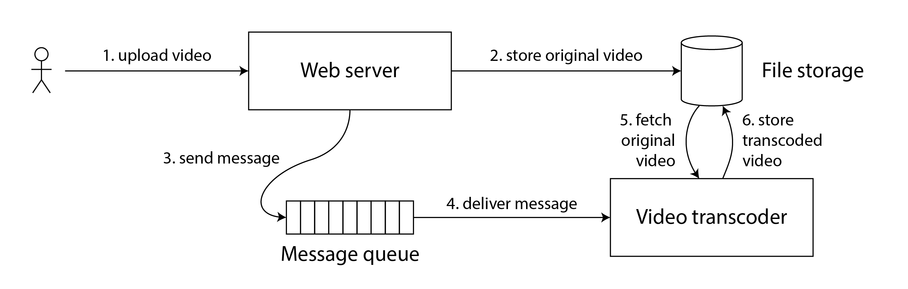
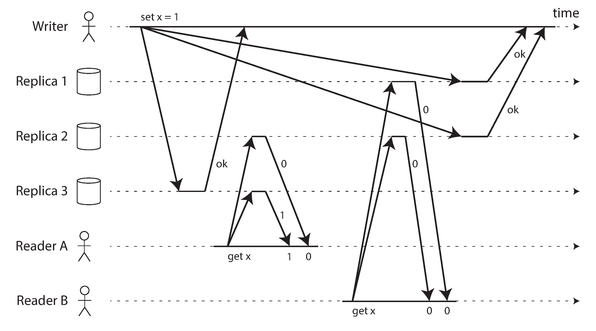
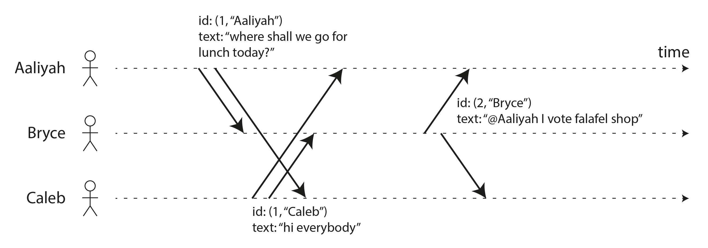

术语表 · 第 10 章 · 课程 10 / 14
一致性与共识
这一章要解决一个被严重滥用的词：一致性。它先把它拆成可判定的定义（线性一致性），再证明它和「可串行化」不是一回事，最后告诉你为什么所有这些看似不同的需求（选主、唯一约束、自增 ID、跨分片提交）其实是同一个问题，而且只有一个正确答案：共识。
10.1「强一致」这三个字，说了等于没说
架构评审会上最常出现、信息量最低的一句话是：「这块数据我们要强一致。」追问一句「多强？」通常得到的回答是「就是很强」。这句话之所以没意义，是因为「一致性」这个词在同一个技术栈里至少有三个互不相关的意思：
- 复制一致性（本章主题）：多个副本之间看到的同一个键，值是否还是同一个、够不够新。
- 事务一致性（第 8 章）：事务把数据库从一个合法状态搬到另一个合法状态，这其实是「正确性」的另一种说法，跟复制毫无关系。
- CAP 里的 C：被形式化定义为线性一致性，而且只定义为它。
更麻烦的是，同一个「复制一致性」下面还挂着一个强度谱系：最终一致、一致前缀读、单调读、读己之写、线性一致性。它们的差别在面试里就是分数差别，在生产里就是「用户到底会不会看到自己刚改的东西」。所以本章的主线只有一条：把需求翻译成一个有名字、可被反驳的模型。
书里给的翻译方式非常干净：想要「强一致」，你就得说出你希望系统表现得像什么。本章给出的答案是：像只有一个副本、并且所有操作原子地作用在它上面。这句话有一个正式名字，叫线性一致性（linearizability）。它还有其他马甲：原子一致性（atomic consistency）、强一致性（strong consistency）、即时一致性（immediate consistency）、外部一致性（external consistency）。
这就是线性一致性（linearizability）（也称为原子一致性，atomic consistency，强一致性，strong consistency，即时一致性，immediate consistency，或外部一致性，external consistency）背后的思想。线性一致性的精确定义相当微妙，本节余下部分会逐步展开；其基本思想，是让系统看起来仿佛只有一份数据，所有操作都原子地作用于这份数据。有了这种保证，即使实际上存在多个副本，应用也无需关心它们。
在线性一致的系统中，只要一个客户端成功完成写入，此后所有客户端从数据库读取时，都必须能看到刚写入的值。要维持“只有一份数据”的假象，就必须保证读到的是最近写入的最新值，而不是来自陈旧缓存或副本的旧值。换句话说，线性一致性是一种新鲜度保证（recency guarantee）。
定义里唯一需要小心的地方是「此后」二字。此后不是指「墙上时钟上更晚」，而是指因果上更晚：B 的操作是在 A 的响应返回之后才发起的。书里的体育网站例子把这个区分钉得很死：Aaliyah 和 Bryce 坐在同一个房间，Aaliyah 刷新页面看到终场比分，喊了出来；Bryce 听到之后才按刷新，结果拿到落后副本的旧数据，页面还显示比赛进行中。这不是「同时刷新拿到不同结果」那种可接受的不一致。Bryce 的请求在因果上确实晚于 Aaliyah 的，所以它必须看到至少一样新的数据。这就是线性一致性的违例。

图 10-3 把规则讲得比任何文字都精确：客户端 C 正在写入 x = 1，写入还没结束；A 已经读到了 1；那么 B 在此之后发起的读必须返回 1，哪怕写入方还没收到确认。注意这条规则的强度：它不要求写入完成才能被看见，只要求「一旦有人看见了新值，就不能再有人看见旧值」。这就是「只有一份数据」在时序上的等价表述。
线性一致性 = 新鲜度保证，不是「不出错」。它只承诺一件事：如果一个操作在另一个操作开始之前已经完成，后者必须看到至少一样新的状态。它不承诺多对象事务的原子性（那是可串行化的事），也不承诺性能。
10.2「你说的强一致是哪一个」——必须能当场分开的四组词
这一节是本章最值得背下来的部分，因为它是评审里唯一能立刻分出「懂」和「背过」的东西。四组对比，每组都是两个听起来一样、实际正交的概念。
① 线性一致性 ≠ 可串行化
| 线性一致性（linearizability） | 可串行化（serializability） | |
|---|---|---|
| 作用对象 | 单个对象（一个键、一行、一个寄存器）的读写 | 多个对象的一组读写（一个事务） |
| 承诺什么 | 新鲜度：先完成的操作必须被后开始的操作看见 | 等价性：并发事务的执行结果等于某个串行顺序 |
| 防什么 | 读到陈旧副本、脑裂后读到旧主的数据 | 写偏斜、幻读、丢失更新 |
| 不防什么 | 两个对象之间的不变式（转账时只扣不加） | 读到陈旧数据（快照隔离下允许） |
两个都满足的系统叫严格可串行化（strict serializability），也叫 strong-1SR。单节点数据库通常天然满足它，因为只有一个副本，也没有并发事务的交叉。分布式数据库则要花很大代价：CockroachDB 提供可串行化加一定的读新鲜度，但不提供严格可串行化，因为后者要求事务之间进行昂贵的协调。
面试标准问法：「你说用可串行化就够了，那用户读到自己刚写的数据了吗？」不一定。可串行化允许你的事务读到一个它自己一致、但整体陈旧的快照。这两个词正交，可以任意组合：弱隔离 + 线性一致（比如读已提交 + 线性一致的键值读），或者可串行化 + 弱新鲜度。选型时要分开写两行。
② 线性一致性 ≠ 顺序一致性
顺序一致性（sequential consistency）保证所有节点看到同一个操作顺序，但那个顺序不必与真实时间一致。线性一致性额外要求这个顺序尊重真实时间（因果）。这是 CPU 内存模型里的经典区分，在分布式里同样成立。评审时如果对方说「我们是顺序一致」，那意味着：所有人看到的顺序一样，但可能是昨天的顺序。
③ 线性一致性 ≠ 最终一致
最终一致是活性承诺，而且是极弱的那种：「只要停止写入，副本最终会收敛」。它不承诺多久，也不承诺收敛前读到什么。线性一致是安全性承诺，任何时刻都不许违反。二者不是程度差别，是种类差别：一个说「总有一天对」，一个说「从来不会错」。
④ CAP 的 C 就是线性一致性，而那套框架建议你别用
CAP 被概括成「一致性、可用性、分区容错性，三者择二」，这句话是错的，而且错得很有害。分区不是你能选的选项，它是一类故障，不管你要不要它都会发生。网络正常时，你完全可以同时拿到线性一致和全面可用；只有分区发生时，才必须二选一。所以更准确的说法是：发生分区时，要么一致，要么可用。
书里对 CAP 的判词很直接：形式化的 CAP 只考察一种一致性模型（线性一致性）和一种故障（网络分区），而 Google 的数据表明网络分区造成的事故不到 8%；它对网络延迟、节点失效以及其他权衡都没有说明。结论是「最好避免使用 CAP 这一框架」。替代品是 PACELC：分区时在 A 和 C 之间选（PAC），否则（E）在延迟 L 和一致性 C 之间选。后者更贴近现实：大多数时候你不是在容错和一致之间选，而是在延迟和一致之间选。

这张图值得在评审里直接用：它把「跨地域多活」的代价画成了一条断掉的线和两个只能选一个的结局。谁再提「我们两地三中心还要强一致」，把这张图推过去，然后问：断线期间，另一边的用户是希望报错，还是希望看到可能冲突的数据？这个问题没有标准答案，但必须由业务来答，不能由架构师替他答。
10.3什么时候你真的需要线性一致性
线性一致性很贵，所以第一个问题永远是「能不能不要」。有三种场景是真的需要，判断标准很清晰：只要存在「必须先知道最新状态才能决定下一步」的逻辑，就需要它。
锁定与领导者选举
单主复制必须保证任意时刻只有一个领导者。用租约实现时，绝不能允许两个节点同时拿到同一份租约，这就是线性一致性的要求。ZooKeeper、etcd 之所以存在，就是为了以容错方式提供这个能力。注意一个细节：ZooKeeper 的写是线性一致的，读却可能陈旧，因为它不保证读由当前领导者处理；etcd 从版本 3 起默认提供线性一致读。这个差别在写选主逻辑时是致命的，很多人栽在这里。
约束与唯一性
用户名唯一、邮箱唯一、库存不为负、座位不能重复卖。这些都需要「所有节点共同认可的最新值」。业务上加一句「注册失败让用户换个名字」并不能免除这个要求，它只是把代价转移给了用户。反过来，航班超售可以先卖再改签补偿，那就不需要线性一致。这里的关键判断是「约束是硬的还是软的」。数据库里真正硬的那些（唯一索引、外键）需要线性一致性；软的业务规则可以放宽。
跨通道时序依赖
这一类最隐蔽，也最常在线上咬人。典型架构：Web 服务器把视频写进对象存储（通道一），确认后往消息队列发一条「去转码」的指令（通道二），转码器收到指令后回对象存储读文件。如果对象存储不是线性一致的，队列可能比存储的内部复制更快，转码器读到的可能是旧版本，甚至读不到。结果不是报错，是转码了一个旧版本，然后原始文件和转码文件永久不一致。

同类问题还有：App 收到推送通知（通道一）后去拉数据（通道二），拉到的副本还没追上；或者 Aaliyah 的嘴（通道一）和数据库复制（通道二）。判断方法很机械：数一数这条链路上有几条独立的、速度不可控的通信通道。两条以上，就要问它们之间的顺序靠什么保证。如果第二条通道的消费者由你控制，可以用「读己之写」这类更便宜的办法替代线性一致性，但复杂度会上升，书里明确说了「系统会更加复杂」。
10.4为什么「w + r > n」不等于强一致
这是全章最容易被面试官用来筛人的一个点。Dynamo 风格的无主复制，很多人背过「读写仲裁满足 w + r > n 就有强一致性」。这句话通常不成立。
反例是书里的图 10-6：n = 3、w = 3，写入客户端把 x 从 0 改成 1 发给全部三个副本；客户端 A 从两个节点读（r = 2），在其中之一看到了新值 1；与写入并发的客户端 B 从另外两个节点读，两个都返回旧值 0。尽管 w + r = 5 > 3，这次执行仍然违反线性一致性：B 的请求在 A 完成之后才开始，却读到了旧值。

为什么？因为仲裁只保证集合相交，不保证相交的那个节点已经收到最新写入。写入还在路上，读已经发生了。要修好它，必须牺牲性能做两件事：读方先同步完成读修复（把错过的写入追回来再返回），写方在写之前先读一遍仲裁节点、取得最大时间戳、确保自己的时间戳更大。Riak 因为性能代价不做同步读修复；Cassandra 的仲裁读确实会等读修复，但它用日历时钟生成时间戳，所以仍然不满足线性一致性（回到第 9 章那个 42.004 vs 42.003 的故事）。
而且即便这样，也只能实现线性一致的读写，实现不了线性一致的比较并设置，后者需要共识算法。
最稳妥的假设：Dynamo 风格的无主系统即使使用仲裁读写，也不提供线性一致性。如果评审里有人用「我们 wr 是 2/2，n 是 3」来论证强一致，这句话就是你的反驳。
10.5ID 生成器：一个能讲透「逻辑时钟」的入口
几乎每个系统都要分配 ID。单节点自增 ID 的优点是紧凑（64 位甚至 32 位就够），而且顺序反映创建顺序。它本身就是一个线性一致系统：每次取号都是原子的获取并增加（fetch-and-add）。
一旦分布式化，这个性质立刻丢失。四条常见替代路线的代价各不相同：
| 方案 | 唯一性 | 顺序性 | 代价 |
|---|---|---|---|
| 分片 ID（奇数/偶数、预留分片位） | ✓ | ✗ 失去顺序含义 | 看到 16 和 17 无法判断谁先发出 |
| 预分配 ID 块（A 拿 1–1000，B 拿 1001–2000） | ✓ | ✗ 同上 | 区间之间无因果约束 |
| 随机 UUID（v4） | ✓ | ✗ 完全随机 | 128 位；比较大小毫无意义 |
| 时间戳 + 唯一信息（Snowflake / ULID / UUIDv7 / ObjectID） | ✓ | ≈ 近似 | 依赖时钟；时钟回拨就错序 |
最后一行是最常用的工业方案，而它恰好踩在第 9 章的坑上：日历时钟时间戳至多只能给出近似顺序。较早的写入读到略快的钟、较晚的写入读到略慢的钟，时间戳顺序就和真实顺序相反。非单调时钟还可能突然跳变，甚至让同一节点生成的时间戳顺序出错。所以书里的判词是：基于日历时钟的 ID 生成器通常不满足线性一致性。
要真正做到线性一致，要么用单节点（TiDB/TiKV 的时间戳预言机，用单主复制做容错，用批量预留避免每次写盘），要么用 Spanner 那套：返回的不是一个时间戳，而是一个不确定区间，系统等到区间完全过去再返回结果。代价是要有高度同步的时钟（GPS + 原子钟）并能算出可信的误差界。
逻辑时钟能补上什么，又补不上什么
物理时钟度量经过了多少秒；逻辑时钟是计算已发生事件数量的算法。它不能告诉你现在几点，但可以相互比较，判断谁先谁后。要求有三条：紧凑且唯一、可全序比较、与因果关系一致。
Lamport 时钟（1978，分布式领域引用最多的论文之一）的做法极简：每个节点维护一个计数器，每生成一次时间戳先自增；看到别人的时间戳更大时，把自己的计数器推进到那个值。时间戳是二元组（计数器, 节点 ID），比较时先比计数器，相同再比节点 ID。它保证：如果 A 因果先于 B，则 ts(A) < ts(B)。

但它有两个硬伤：与物理时间无关（查不到「某天发了哪些消息」）；两个从不通信的节点，计数器可能差得很远。
混合逻辑时钟（HLC）把两者缝起来：像物理时钟一样以秒/微秒计数，又像 Lamport 时钟一样在看到更大时间戳时向前推进；每次生成也自增，所以始终单调，即使底层时钟被 NTP 往回调。代价是它可能略微领先物理时钟。CockroachDB 用的就是这个。
关键的边界在这里：Lamport/HLC 不等于线性一致性。它们只保证「新时间戳大于本节点见过的所有时间戳」，对没见过的时间戳毫无保证。书里图 10-10 的例子值得完整复述：用户先把账户设为私密（写在账户库），再上传照片（写在照片库）。两个库各自用 HLC，照片库没有读账户库，本地计数器可能略微落后，于是照片上传的时间戳反而小于权限变更的时间戳。访客按快照隔离读时，拿到一个「大于照片上传、小于权限更新」的时间戳，系统认为那一刻账户还是公开的，于是把照片显示给了不该看的人。
更狠的一点：就算你有了线性一致的 ID 生成器，也不足以实现锁和唯一约束。多个节点争同一把锁，可以用逻辑时钟选时间戳最小的，但如果时钟是线性一致的，后来的请求时间戳必然更大，所以胜者已经定了。问题在于胜者怎么知道自己赢了：它必须收到每一个可能生成时间戳的节点的消息。只要一个节点失联，谁也无法排除它持有更小时间戳，整个系统停摆。这就是为什么容错的锁必须靠共识，不能靠时钟。
10.6共识：四个问题，一个答案
到这里，本章的几个线索汇到一处。看似不同的四件事：
- 选主 / 取锁（单值共识）
- 唯一约束 / 原子的比较并设置（CAS）
- 复制日志 / 全序广播（共享日志）
- 跨库事务的提交或中止（原子提交）
它们彼此等价：任意一个的解法都能转换成其他三个的解法。这不是类比，是可构造的归约。书里给了每条归约的方向，值得至少记住两条，因为面试追问「凭什么等价」时，答不上来就露馅了：
- 有共识 → 有 CAS：对象初始为空，每个想提议的节点 CAS（期望空、写入自己的值），最终被设成什么，共识就决定什么。
- 有共享日志 → 有共识：每个节点请求把自己的值加入日志，第一条日志条目里的值就是决定值；所有人按相同顺序读，必然就「谁最先」达成一致。
共识算法必须满足四条属性，这条清单建议直接抄进评审文档：
| 属性 | 含义 | 类型 |
|---|---|---|
| 一致同意（uniform agreement） | 任意两个节点不会作出不同的决定 | 安全 |
| 完整性（integrity） | 一旦决定了某个值，不能再改主意 | 安全 |
| 有效性（validity） | 决定的值必须是某个节点提议过的（排除「一律决定 null」这种平凡解） | 安全 |
| 终止（termination） | 每个未崩溃的节点最终都能决定某个值 | 活性 |
如果没有容错要求，前三条约等于「雇一个独裁者」，三秒就能实现。所有难度都在第四条。而第四条有一个绕不过去的下限：任何共识算法都要求至少多数节点正常运行，否则无法保证终止。反过来说，即使多数节点失效，大多数共识算法仍能保证三条安全属性：大范围故障可以让系统停止服务，但不能让它作出自相矛盾的决定。这句话是共识最值钱的地方。
顺便把 FLP 处理掉。你可能听过「FLP 不可能性」：只要节点可能崩溃，就没有算法能保证始终达成共识。它没说的部分是：它针对异步模型下的确定性算法，这种模型里不许用时钟、不许用超时。一旦允许算法根据超时怀疑节点死亡（哪怕猜错），共识就变得可解；甚至只允许使用随机数也够。所以实践中共识照样能用。
为什么共识要两轮投票
这里有个漂亮的死循环：选主需要共识，达成共识又需要一个主。共识算法的破解方式是放宽要求：不要求任何时刻只有一个领导者，只要求每个「纪元」内领导者唯一。纪元编号在 Paxos 里叫投票编号（ballot），VSR 叫视图编号（view），Raft 叫任期（term）。
于是每个决定要走两轮：第一轮选领导者（拿到更大纪元编号者胜，纪元大的说了算）；第二轮对新领导者提议的这条日志条目表决。两轮的法定人数必须相互重叠，这样如果提案通过，赞成票里至少有一个节点参加过最近一次成功的选举，现任领导者就能断定不存在更大纪元的领导者，可以安全追加。
因此，这里需要两轮投票：第一轮选举领导者；第二轮对领导者提议追加的下一条日志条目进行表决。两轮投票的法定人数必须相互重叠：如果某项提议表决通过，投赞成票的节点中，至少要有一个参加过最近一次成功的领导者选举。所以，如果提议表决通过，而且投票过程没有发现编号更高的纪元，现任领导者便可以断定，没有纪元编号更高的领导者当选，因而可以安全地把提议条目追加到日志。
这两轮投票表面上很像两阶段提交，实际上却是两种截然不同的协议。在共识算法中，任何节点都可以发起选举，而且只需一组法定人数节点响应；在 2PC 中，只有协调者能请求投票，并且必须从每个参与者那里得到“同意”票，事务才能提交。
注意它和两阶段提交的区别，很多人会混：共识里任何节点都可以发起选举，只需一组法定人数响应；2PC 里只有协调者能请求投票，而且必须拿到每一个参与者的同意才能提交。前者容错，后者不容错，协调者一挂就卡住。
共识的代价，一条也不能省
尽管如此，共识并未无处不在，因为它的好处也有代价。共识系统总要有严格多数节点才能运行：要容忍一个节点故障，至少需要三个节点；要容忍两个节点故障，至少需要五个。每项操作都必须与一组法定人数节点通信，因此不能靠增加节点来提高吞吐量（实际上，每增加一个节点，算法反而会变慢）。如果网络分区把一部分节点同其余节点隔开，只有多数派所在的一侧能够取得进展，另一侧则会阻塞。
共识系统通常依靠超时来检测失效节点。在网络延迟变化很大的环境中，尤其是跨多个地理区域部署的系统，超时时间很难调好：设得太长，故障恢复会耗时很久；设得太短，又会触发大量不必要的领导者选举，导致性能极差——系统花在选举领导者上的时间，可能比花在有用工作上的还多。
要容忍 1 个节点故障至少 3 个节点，容忍 2 个至少 5 个。增加节点不会提高吞吐，实际上每加一个都会更慢，因为每次操作都要和一组法定人数通信。分区时只有多数派那一侧能推进，少数派彻底阻塞。而故障检测靠超时。跨地域部署时超时极难调：设长了恢复慢，设短了频繁选举，系统花在选主上的时间可能比干活还多。Raft 还被发现过边界情况：即使整个网络正常，只要某条链路持续不可靠，领导权就可能在两个节点之间来回跳，系统实际上永远无法推进。
反例：为了「快速恢复」放宽共识，等于走出理论保护区
Kafka 集群开了 unclean.leader.election.enable=true，理由是「故障恢复快，可用性优先」。或者：用异步复制的 MySQL 主从，主库挂了让运维手动把从库提成主库。两者都号称「高可用」。
非同步副本选举允许任何副本成为领导者，即使它没追上最新进度。新领导者上任后，会用它自己的（较短的）日志覆盖掉旧领导者已经确认过的写入，已提交的数据凭空消失，而且共享日志的「仅追加」属性被违反。异步复制的主从切换更彻底：故障发生时根本无法保证任何从库已经追上，切换等于赌一把。一旦放弃「新领导者必须掌握最新数据」这条要求，共识理论就不再适用了。没故障时一切正常，一遇到第 9 章那些问题，就是大面积丢数据或损坏。
正确做法是接受代价：要么用 3/5 节点的多数派、接受写延迟；要么明确写成「本系统在故障切换时可能丢失最近 N 秒数据」，让业务方签字。中间地带最危险：既没有共识的保护，又对外宣称强一致。
10.7协调服务：把共识外包出去
ZooKeeper、etcd、Consul 看起来像键值存储，但设计目标完全不同：它们只保存能全部放进内存的少量数据（同时写盘保证持久性），用容错共识复制到 3 或 5 个节点，专门用来协调别的分布式系统。Kubernetes 依赖 etcd，Spark/Flink 的高可用模式依赖 ZooKeeper。
它们把共识和四个惯用法打包在一起，这四个才是你真正要用的东西：
- 锁与租约：多个节点争同一份租约，只有一个能成功（靠线性一致 CAS）。
- 栅栏令牌：每条日志条目有单调递增 ID（ZooKeeper 的
zxid、etcd 的 revision），用它隔离僵尸客户端。 - 故障检测：长会话 + 心跳。心跳中断超过租约超时，服务端认定客户端已死并释放其租约（ZooKeeper 的临时节点）。
- 变更通知：键变化时主动推送，客户端不必轮询就能知道有节点加入或死亡。
为什么值得单独拿一组机器跑协调服务？因为把共识外包比让几千个节点一起跑共识高效得多。一个存储系统可能有几千个分片，若让几千个节点共同运行共识算法，效率会低得惊人。而这些元数据变化很慢，「IP 为 10.1.1.23 的节点是分片 7 的领导者」这类信息往往几分钟甚至几小时才变一次。协调服务不是用来存每秒变几千次的数据的。
反过来，用协调服务做服务发现往往是杀鸡用牛刀。服务发现不需要线性一致性，它更需要高可用和低延迟，因为服务发现一挂，整个系统就停摆。所以更好的做法是缓存服务发现信息、接受结果可能略有陈旧。DNS 就是靠多层缓存拿到性能和可用性的。ZooKeeper 为此提供了观察者（observer）节点：接收日志、维护数据副本，但不参与投票，读取可能陈旧，但网络中断时仍可读，还能提高读吞吐。
10.8面试里怎么答
问：「你们这个系统的一致性是怎么保证的？」
「先把词说清楚：如果指的是复制一致性，我们用的是单主复制加共识选主（etcd 租约 + 栅栏令牌），写走主、线性一致读也走主，所以是线性一致性；如果指的是事务隔离，我们用的是快照隔离，不是可串行化，所以跨行的不变式要靠唯一索引和条件更新来兜，不能靠隔离级别。
这两个是正交的：我们提供线性一致但只有快照隔离，不是严格可串行化。跨分片事务目前没有，用的是本地消息表 + 幂等消费做最终一致，收敛时间目标是秒级。
代价我说清楚：分区时少数派那一侧会阻塞，写入延迟包含一次共识往返，跨地域大概多 100 毫秒；扩容不会提升写吞吐，每加一个节点还会更慢。所以我们把共识只用在元数据和租约上，业务数据走分片主从。」
这段话之所以能扛追问，是因为它每一句都主动交了代价、给出了名字、划清了边界。面试官追「为什么不干脆全用 etcd」，你答共识不扩展、每加节点更慢、只适合慢变的小数据；追「快照隔离不够怎么办」，你答用唯一约束和 CAS 把关键不变式做成硬约束，而不是升级到可串行化（那要跨分片协调，代价高一个数量级）。
练习这属于哪个一致性问题
五个线上现象，全都是「数据看起来不对」，但要求的解法完全不同。选错就等于给系统加了一层没用的复杂度。
用户改完昵称，刷新页面看到的还是旧昵称，过几秒才变。查下来读请求被负载均衡打到了只读副本。
这是最弱的一档需求：只要「同一个用户自己能看见自己的写」即可，不需要所有用户都立刻看见。解法是把该用户的读路由到主库，或记住他上次写入的时间戳并要求副本追上。用线性一致性解决它是杀鸡用牛刀。
两个人同时注册同一个用户名，两个都成功了，数据库里出现两条同名记录。唯一索引建了，但表分在两个库上。
单库的唯一索引只能保证单库内唯一。跨库的唯一性本质上是「抢一把锁」，要么把该字段路由到同一个分片，要么用共识服务（如 etcd/ZooKeeper）做名称占用，要么用全局去重表。注意它不能用逻辑时钟解决，因为胜者无法确认自己是最小时间戳。
三副本键值库，wr 都设为 2，n=3。压测时偶尔出现：A 刚读到新值，紧接着 B 读到旧值。B 的请求确实在 A 返回之后才发出。
经典图 10-6。仲裁只保证读集合与写集合相交，不保证相交节点已收到写。要修就得同步读修复 + 写前读最大时间戳，性能代价很大；而且即使修好读写，CAS 仍然需要共识。
聊天应用用 Snowflake 生成消息 ID，按 ID 排序展示。用户偶尔发现自己的回复显示在它所回复的消息上面。
Snowflake 依赖各机器的日历时钟大致同步；时钟回拨或漂移会让因果更晚的 ID 更小。要真正保证顺序，得用线性一致的 ID 生成器（单节点时间戳预言机，或 Spanner 式不确定区间），或者干脆不靠 ID 排序、改用逻辑时钟 + 显式因果引用。
跨行转账：从 A 扣 100、给 B 加 100。两个账户在不同分片。系统用了可串行化隔离，但故障切换后偶尔出现只扣不加。
这是多对象、跨节点的「全有或全无」，属于原子提交问题。可串行化解决的是「并发事务的交错是否等价于串行」，不解决「协调者崩溃后参与者怎么办」。注意 2PC 的协调者是单点，要用共识做协调者，或者用共识直接实现原子提交。
贴进架构评审文档的话：「本系统的一致性目标按对象分别声明：(1) 元数据与租约：线性一致性，由 etcd 共识提供，写与线性一致读均经多数派确认，附带单调递增 revision 作栅栏；(2) 业务数据：单主复制、读走主，提供线性一致读，故障切换时可能丢失异步复制窗口内的写入（已登记为已知限制）；(3) 跨服务派生数据：最终一致，收敛目标 5 秒，靠幂等消费保证；(4) 事务隔离为快照隔离，不提供严格可串行化，跨行不变式以唯一索引与条件更新实现。分区时少数派侧拒绝写入（CP 取向），已与业务确认可接受。」
一手资源
第 10 章 一致性与共识（中文全译）：必读「线性一致性与可串行化」那个边栏（一次讲清两个词的分界）、「线性一致性与仲裁」（图 10-6 的反例）、「共识的多面性」（四条等价性）。「共识的微妙之处」讲清了为什么 unclean election 是在薄冰上走。
随时问我
把你们系统里所有对外的「一致性承诺」句子贴给我，文档里的、口头约定都算。我们逐句翻译成：哪个对象、哪个模型、分区时怎么办、故障切换会丢什么。翻不出来的那句，就是评审时会被问穿的那句。